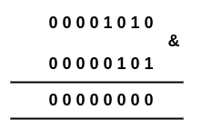
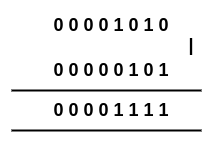
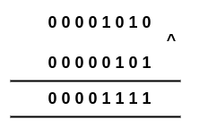
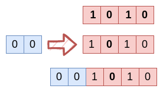
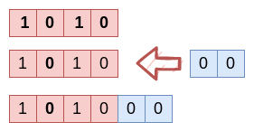

Motivation
Operator คือสัญญลักษณ์ที่ทำให้ทราบว่าการเปลี่ยนแปลงของ Operand เกิดขึ้นได้อย่างไร เช่น 9 + 6
ใน expression นี้ 9 และ 6 คือ operands และ "+" คือ operator ทำให้ทราบว่าเป็นการเพิ่มค่าให้กับ 9 ไปอีก 6 หน่วย
Operator ใน Python ได้แก่
Comparison Operators
ใช้เทียบค่าของ Operand ซ้ายและขวา ผลที่ได้จะมีได้ 2 ค่าคือ True (เป็นจริง) หรือ False (เป็นเท็จ) บางครั้งเรียก Relation Operators
| Operatos |
ความหมาย |
ตัวอย่าง |
| == |
ถ้าค่าของ operand ทั้งทางซ้ายและขวา"เท่ากัน" จะได้ค่า True ในทางตรงข้ามจะได้ False
|
3 == 2 (False)
"Ant" == "Ant" (True)
"Bangkok" == "bangkok" (False)
|
| !=,<> |
ถ้าค่าของ operand ทั้งทางซ้ายและขวา"ไม่เท่ากัน" จะได้ค่า True ในทางตรงข้ามจะได้ False
|
3 != 2 (True)
"Ant" != "Ant" (False)
"Bangkok" <> "bangkok" (True)
|
| < |
ถ้าค่าของ operand ทั้งทางซ้าย "น้อยกว่า" ทางขวา จะได้ค่า True ในทางตรงข้ามจะได้ False
|
3 < 2 (False)
"Ant" < "Ant" (False)
5 < 50 (True)
|
| > |
ถ้าค่าของ operand ทั้งทางซ้าย "มากกว่า" ทางขวา จะได้ค่า True ในทางตรงข้ามจะได้ False
|
3 > 2 (True)
"Ant" > "Ant" (False)
5 > 50 (False)
|
| <= |
ถ้าค่าของ operand ทั้งทางซ้าย "น้อยกว่าหรือเท่ากับ" ทางขวา จะได้ค่า True ในทางตรงข้ามจะได้ False
|
3 <= 3 (True)
"Ant" <= "Ant" (True))
5 <= 50 (True)
|
| >= |
ถ้าค่าของ operand ทั้งทางซ้าย "มากกว่าหรือเท่ากับ" ทางขวา จะได้ค่า True ในทางตรงข้ามจะได้ False
|
0 >= 3 (False)
"Ant" >= "Ant" (True))
5 >= 50 (True)
|
Logical Operator
คือ operator ที่ใช้เชื่อมประพจน์ (statements) เข้าด้วยกัน
| Operatos |
ความหมาย |
| and |
ถ้าค่าความจริง operand ทั้งทางซ้ายและทางขวา เป็นจริงทั้งคู่ จะได้ค่า True กรณีอื่นเป็น False
|
| or |
ถ้าค่าความจริง operand ทางซ้ายและทางขวา เป็นเท็จทั้งคู่ จะได้ค่า False กรณีอื่นเป็น True
|
| not |
เปลี่ยนค่าความจริงของ statement หรือ operand ให้เป็นค่าตรงข้าม
|
Identity and membership operators
Identity operators
ใช้การเทียบตำแหน่งในหน่วยความจำของ 2 operands หรือ variables
| Operatos |
ความหมาย |
ตัวอย่าง |
| is |
ให้ค่า True ถ้าตำแหน่งในหน่วยความจำของ operands ทั้งซ้ายและขวาอยู่ตำแหน่งเดียวกัน ถ้าไม่จะให้ค่า False
|
x = 3
y = 3
z = "Hello"
x is y (True)
y is x (True)
x is z (False)
y is z (False)
|
| is not |
ให้ค่า True ถ้าตำแหน่งในหน่วยความจำของ operands ทั้งซ้ายและขวาไม่อยู่ตำแหน่งเดียวกัน ถ้าไม่จะให้ค่า False
|
x = 3
y = 3
z = "Hello"
x is not y (False)
y is not x (False)
x is not z (True)
y is not z (True)
|
♣♣♣
Membership operators
ใช้ตรวจสอบการเป็นสมาชิกของ Sequence Data Types เช่น String, List, Tuple
| Operatos |
ความหมาย |
ตัวอย่าง |
| in |
ให้ค่า True เมื่อ operand ทางด้านซ้ายมือเป็นสมาชิกของ sequential data type , ในทางตรงข้ามจะให้ค่า False
|
x = 3
y = [1,2,3,4]
x in y (True)
90 in y (False)
|
| not in |
ให้ค่า True เมื่อ operand ทางด้านซ้ายมือไม่เป็นสมาชิกของ sequential data type , ในทางตรงข้ามจะให้ค่า False
|
x = 30
y = [90,1,2,3,4]
x not in y (True)
90 not in y (False)
|
Bitwise operators
Bitwise operations คือ การคำนวณค่าของ variable แบบ bit by bit
| Operatos |
ความหมาย |
ตัวอย่าง |
| & |
Binary AND : ให้ค่าเป็น 1 เมื่อ operand ที่ตำแหน่งตรงกันเป็น 1 ทั้งคู่ นอกนั้นให้ค่า 0
|

|
| | |
Binary OR : ให้ค่าเป็น 0 เมื่อ operand ที่ตำแหน่งตรงกันเป็น 0 ทั้งคู่ นอกนั้นให้ค่า 1
|

|
| ^ |
Binary XOR : ให้ค่าเป็น 0 เมื่อ operand ที่ตำแหน่งตรงกันมีค่าเท่ากัน ถ้ามีค่าต่างกันให้ค่า 1
|

|
| >> n |
Binary right shift : ขยับทุก bit ไปทางขวา n bit (เติม bit 0 ทางด้านซ้ายจำนวน n bit )
การทำ shift right เทียบได้กับการหารด้วย \(2^n\)
|
1010 >> 2 = 001010

|
| << n |
Binary left shift : ขยับทุก bit ไปทางซ้าย n bit (เติม bit 0 ทางด้านขวาจำนวน n bit )
การทำ shift left เทียบได้กับการคูณด้วย \(2^n\)
|
1010 << 2 = 101000

|
Exercise
1. เขียนชุดคำสั่งตามลำดับที่กำหนดให้เพื่อคำนวณหาพื้อนที่สี่เหลี่ยมจตุรัส
- กำหนดให้แต่ละด้านมีความยาว 5 หน่วย
- พื้นที่ = ความยาวของด้าน x ความยาวของด้าน
2. จากรูป เราทราบว่า \( \angle AOB + \angle BOC = 180 \) จงแปลงข้อความนี้ให้เป็นชุดคำสั่ง
3. นาย A ไปตลาดซื้อปลามา 5 ตัว จ่ายเงินค่าปลาไปทั้งหมด 250 บาท จงเขียนชุดคำสั่งหาคำนวณหาราคาขายของปลาแต่ละตัว
4. นาย A หลังจากได้รับเงินเดือนแล้ว จ่ายค่าหนังสือไป 800 บาท ให้แม่ใช้ส่วนตัว 16% ของเงินเดือน และนำเงินบริจาคการกุศล 4% ของเงินเดือน แต่พ่อของนาย A
ได้รับเงินค่าจ้างเป็น 160% ของเงินที่นาย A จ่ายไปตามที่กล่าวมา ถ้านาย A ได้รับเงินเดือน 20,000 บาท จงเขียนชุดคำสั่งใช้คำนวณหาเงินค่าจ้าง
ของพ่อของนาย A
5. หนังสือจำนวน 110 เล่ม แบ่งได้ดังนี้
- เป็นหนังสือเก่าจำนวน 20 % ที่เหลือเป็นหนังสือใหม่
- 10% ของหนังสือใหม่ และ 60% ของหนังสือเก่าเป็นหนังสือภาษาอังกฤษ ที่เหลือเป็นหนังสือภาษาไทย
เขียนชุดคำสั่งเพื่อคำนวณหาจำนวนหนังสือใหม่ หนังสือเก่า หนังสือภาษาไทย และหนังสือภาษาอังกฤษ
6. เขียนชุคำสั่งหาเศษของ \( 15 \div 4 \)